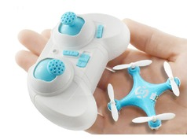

Модель квадрокоптера Cheerson CX10
Описание товара
CX-10 - один из самых маленьких квадрокоптеров в мире. Несмотря на размер, он имеет четыре канала управления, 6-осевой гироскоп и подсветку. Миниатюрный CX-10 подарит вам много приятных эмоций. Мультикоптер подойдет для ценителей радиоуправляемой техники, а также для тех, кто первый раз слышит, что такое квадрокоптер.
Характеристики товара
Аккумулятор и зарядное устройство в комплекте
, 4х канальная система управления

Подобный товар